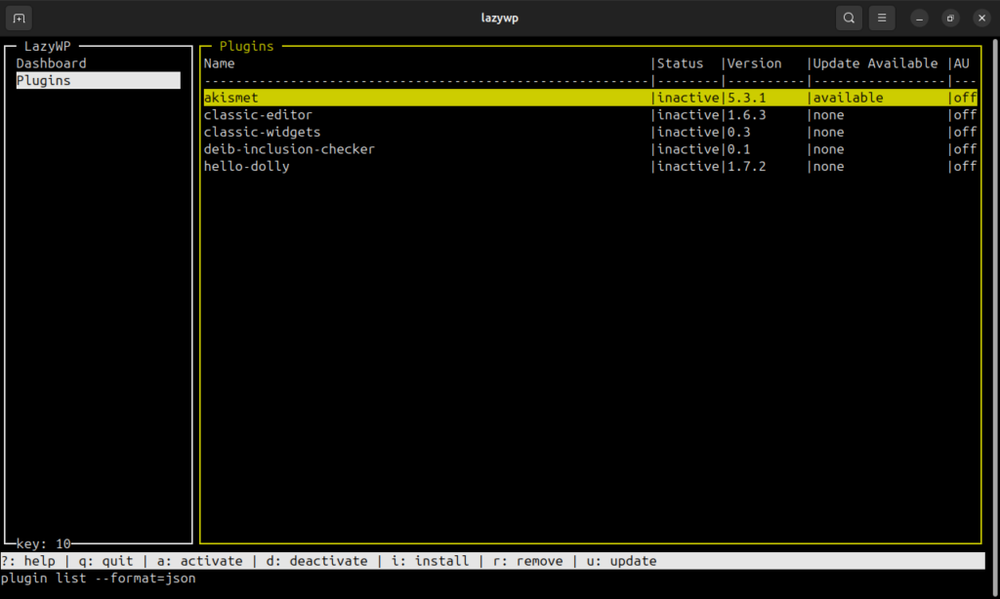

lazywp – A terminal user interface for wpcli
I am using the terminal quite a lot. Lately I moved to neovim as my IDE of choice because it’s fast, comfortable (after some time settling in ofc) and portable. With switching my IDE to the terminal I wanted to discover other tools which could help me with my daily workflow. So I found layzgit and lazydocker, both developed by Jesse Duffield. I don’t want to miss both in my system.
As a WordPress developer I use wpcli a lot. I mean, how can I not? It’s one of the most useful tools for automation within the WordPress universe. But I also use it to manage some WordPress instances by hand. And I usually forget the commands and their operators. This is why I am building lazywp.
|  |
|---|
| lazywp - a tui for wpcli |
Since I am doing this in my freetime the development of this project will take some time. As for now I am concentrating on the python module curses and get everything stable. The next steps I can identify are:
- Creating a flexible modal for some feedback messages
- A flexible modal with yes/no as selectable options
- A user input modal for installing plugins
With that I have a basic system which can handle plugins. It’s something. I’ll keep track of the development in this blog.